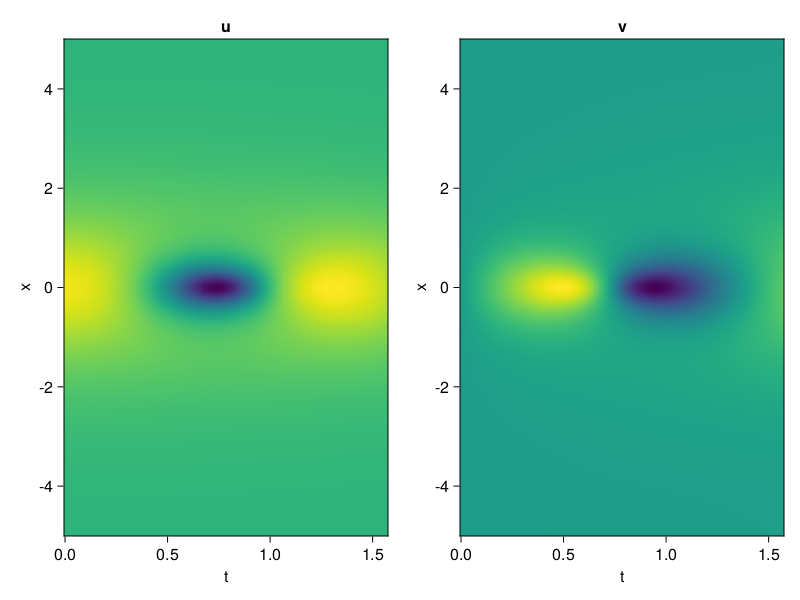
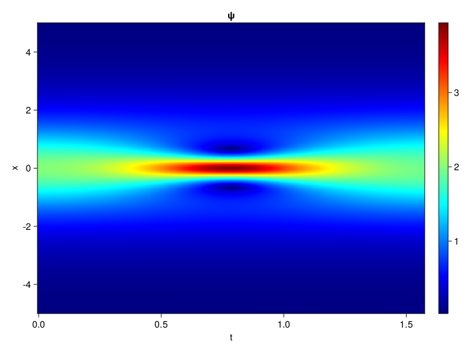
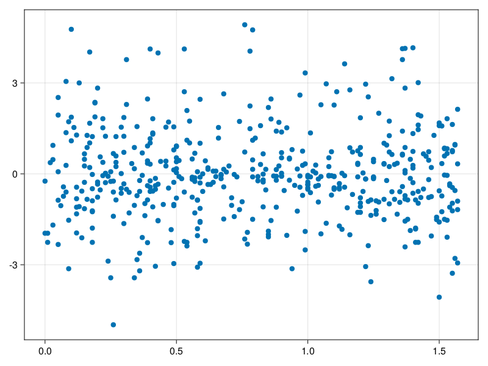

Schrödinger equation
The nonlinear Shrödinger equation is given by
\[\mathrm{i} \partial_t \psi=-\frac{1}{2} \sigma \partial_{x x} \psi-\beta|\psi|^2 \psi\]
Let $\sigma=\beta=1, \psi=u+v i$, the equation can be transformed into a system of partial differential equations
using ModelingToolkit, IntervalSets, Sophon, CairoMakie
using Optimization, OptimizationOptimJL
@parameters x,t
@variables u(..), v(..)
Dₜ = Differential(t)
Dₓ² = Differential(x)^2
eqs=[Dₜ(u(x,t)) ~ -Dₓ²(v(x,t))/2 - (abs2(v(x,t)) + abs2(u(x,t))) * v(x,t),
Dₜ(v(x,t)) ~ Dₓ²(u(x,t))/2 + (abs2(v(x,t)) + abs2(u(x,t))) * u(x,t)]
bcs = [u(x, 0.0) ~ 2sech(x),
v(x, 0.0) ~ 0.0,
u(-5.0, t) ~ u(5.0, t),
v(-5.0, t) ~ v(5.0, t)]
domains = [x ∈ Interval(-5.0, 5.0),
t ∈ Interval(0.0, π/2)]
@named pde_system = PDESystem(eqs, bcs, domains, [x,t], [u(x,t),v(x,t)])\[ \begin{align} \frac{\mathrm{d}}{\mathrm{d}t} u\left( x, t \right) =& - \frac{1}{2} \frac{\mathrm{d}^{2}}{\mathrm{d}x^{2}} v\left( x, t \right) - \left( \left|u\left( x, t \right)\right|^{2} + \left|v\left( x, t \right)\right|^{2} \right) v\left( x, t \right) \\ \frac{\mathrm{d}}{\mathrm{d}t} v\left( x, t \right) =& \frac{1}{2} \frac{\mathrm{d}^{2}}{\mathrm{d}x^{2}} u\left( x, t \right) + \left( \left|u\left( x, t \right)\right|^{2} + \left|v\left( x, t \right)\right|^{2} \right) u\left( x, t \right) \end{align} \]
pinn = PINN(u = Siren(2,1; hidden_dims=16,num_layers=4, omega = 1.0),
v = Siren(2,1; hidden_dims=16,num_layers=4, omega = 1.0))
sampler = QuasiRandomSampler(500, (200,200,20,20))
strategy = NonAdaptiveTraining(1,(10,10,1,1))
prob = Sophon.discretize(pde_system, pinn, sampler, strategy)OptimizationProblem. In-place: true
u0: ComponentVector{Float64}(u = (layer_1 = (weight = [0.4476020932197571 0.44989997148513794; -0.45267051458358765 0.1726706624031067; … ; -0.13120222091674805 0.24382621049880981; -0.2832644581794739 -0.0013567209243774414], bias = [0.0; 0.0; … ; 0.0; 0.0;;]), layer_2 = (weight = [-0.5453999638557434 -0.04953118786215782 … -0.3026931881904602 0.28677886724472046; -0.5727037191390991 -0.28780606389045715 … -0.07208745926618576 -0.22404292225837708; … ; 0.24330979585647583 -0.35997462272644043 … 0.26709482073783875 0.19110408425331116; -0.26351699233055115 -0.5875455141067505 … 0.1926930844783783 0.10963606089353561], bias = [0.0; 0.0; … ; 0.0; 0.0;;]), layer_3 = (weight = [0.43160197138786316 -0.43629372119903564 … -0.5228959321975708 0.23179885745048523; -0.11124564707279205 0.603255569934845 … 0.007091850508004427 0.26502859592437744; … ; -0.14944365620613098 -0.5937946438789368 … -0.416620671749115 -0.2188165932893753; 0.5139820575714111 0.25549745559692383 … -0.3328040838241577 -0.1369798481464386], bias = [0.0; 0.0; … ; 0.0; 0.0;;]), layer_4 = (weight = [-0.0071357968263328075 0.4902511537075043 … 0.41190725564956665 -0.206412211060524; 0.5582647323608398 0.5994138717651367 … -0.30177637934684753 0.5520179271697998; … ; -0.3591146767139435 0.14682747423648834 … -0.0805463194847107 0.45157182216644287; 0.09648378193378448 0.035600580275058746 … 0.008326580747961998 0.3704169988632202], bias = [0.0; 0.0; … ; 0.0; 0.0;;]), layer_5 = (weight = [-0.32413503527641296 -0.016264652833342552 … 0.23569948971271515 -0.04504465311765671], bias = [0.0;;])), v = (layer_1 = (weight = [-0.06978243589401245 0.1251007318496704; 0.026446104049682617 0.22806531190872192; … ; 0.029305636882781982 0.03707385063171387; -0.3756304979324341 -0.4304170608520508], bias = [0.0; 0.0; … ; 0.0; 0.0;;]), layer_2 = (weight = [-0.35677239298820496 -0.09123001247644424 … -0.552634060382843 -0.5164057016372681; 0.004144091159105301 -0.0018209239933639765 … -0.1674974113702774 0.15585099160671234; … ; 0.4576035141944885 -0.03854914382100105 … -0.3780885338783264 0.07941057533025742; -0.3204629719257355 0.3688790202140808 … -0.16673718392848969 -0.008425057865679264], bias = [0.0; 0.0; … ; 0.0; 0.0;;]), layer_3 = (weight = [-0.13938704133033752 -0.34348586201667786 … 0.2092955857515335 -0.23300963640213013; 0.3654140532016754 0.44236689805984497 … 0.43570905923843384 0.28875529766082764; … ; 0.22952935099601746 0.1286569982767105 … -0.1457386612892151 0.4722665250301361; -0.006441270001232624 -0.5464791655540466 … 0.17347301542758942 -0.4284493625164032], bias = [0.0; 0.0; … ; 0.0; 0.0;;]), layer_4 = (weight = [0.3473874628543854 0.47127261757850647 … 0.1072818711400032 -0.6053301692008972; -0.5836916565895081 -0.5156317353248596 … -0.46528834104537964 0.37673860788345337; … ; -0.36897608637809753 0.5421300530433655 … 0.35554057359695435 0.27738678455352783; -0.08021818101406097 0.01959851197898388 … -0.1250370442867279 -0.34106531739234924], bias = [0.0; 0.0; … ; 0.0; 0.0;;]), layer_5 = (weight = [-0.038813915103673935 -0.5062798261642456 … -0.38305819034576416 0.3815419673919678], bias = [0.0;;])))Now we train the neural nets and resample data while training.
function train(pde_system, prob, sampler, strategy, resample_period = 500, n=10)
bfgs = BFGS()
res = Optimization.solve(prob, bfgs; maxiters=2000)
for i in 1:n
data = Sophon.sample(pde_system, sampler)
prob = remake(prob; u0=res.u, p=data)
res = Optimization.solve(prob, bfgs; maxiters=resample_period)
end
return res
end
res = train(pde_system, prob, sampler, strategy)u: ComponentVector{Float64}(u = (layer_1 = (weight = [0.12907554827330092 0.4353403611170666; -0.9640222189378075 0.3863998139455963; … ; 0.20918519674067174 0.12467674210431964; -0.41654968071254317 0.6862702341431208], bias = [-0.17514933935871743; -0.5507388996903185; … ; -0.18093818714866572; -0.3767895682986282;;]), layer_2 = (weight = [-0.5230188435348931 0.0804324705569551 … -0.40202445293753725 0.09987141715831652; -0.45260169568559866 -0.17173236177336748 … -0.29984841094722464 -0.19495626685988524; … ; -0.028704078748969426 -0.14021240502170254 … 0.09070528339498583 -0.11758139306413276; -0.17845755049162004 -0.08763229414455039 … 0.2609533191214132 0.21973269991177427], bias = [0.013063445189715734; -0.33304404247431835; … ; 0.1764510938243455; -0.6888700222411122;;]), layer_3 = (weight = [0.3635406711964711 -0.3150676393043243 … -0.6341131640924974 0.40718413002127857; -0.17117218722842523 0.26013040420016215 … 0.17860787362799435 0.24341231392010107; … ; -0.13793799992906752 -0.6776497860085271 … -0.5171811339835817 0.08977316239654344; 0.48196264760419294 0.348489696020453 … -0.03997486139702315 -0.3355561500312108], bias = [-0.2736614470391817; 0.050173701849128824; … ; -0.1820233966157354; -0.2336429758137748;;]), layer_4 = (weight = [0.11821606663806539 0.5578518630066113 … 0.22925995679024702 -0.3407253931905322; 0.5908616785958435 0.9234067294363014 … -0.3489350541119196 0.5389097823679443; … ; -0.3056558121646423 -0.014746353276892605 … -0.08761187386315064 0.4396582333483414; 0.12483666418557594 -0.012949056353901317 … 0.052709335831811845 0.3966435656394491], bias = [-0.23859667173022014; -0.422717487136136; … ; 0.30530808577579277; -0.1704593444680484;;]), layer_5 = (weight = [-0.5637054509196608 0.26861971930098216 … 0.6158245893931378 -0.28806610052529247], bias = [-0.17018050088485087;;])), v = (layer_1 = (weight = [-0.2680444785962429 0.15092864688152113; 0.30096556421390785 0.42520024046380867; … ; 0.18465400892653933 0.5281331486866361; -0.5166385972577238 -0.4563341185593708], bias = [0.2559260463463808; -0.04585744442901498; … ; 0.0004667017590112093; 0.005054141946120547;;]), layer_2 = (weight = [-0.19104135209904316 -0.30551324548822556 … -0.5287824677100894 -0.19158580420304414; -0.44274560362558685 0.17126382171793514 … -0.3367066286068465 0.26952926203736877; … ; 0.4164568854435169 -0.04165406030927894 … -0.46510204708329766 0.0011383371871200852; -0.4277951087380628 0.45705399557459436 … -0.1413784595452651 -0.04821359896202961], bias = [-0.01286794091258842; 0.2986825634631354; … ; -0.3908009041874277; -0.0010564354880548666;;]), layer_3 = (weight = [-0.3433764148762158 -0.35020598988812845 … -0.005013741429089067 -0.08067704664045085; 0.5997893216862823 0.6063654290345173 … 0.3064286140069356 0.2463190796831881; … ; 0.11966615117676262 -0.543443784361323 … 0.12013138525623028 0.3755306451810154; -0.1308369203886477 -0.3697736063386925 … -0.0616384031218455 -0.35212228645953597], bias = [0.021719144115408918; 0.15044864623136533; … ; -0.030689533302897726; -0.1417802939622907;;]), layer_4 = (weight = [0.7771371986096935 0.2489024373430513 … 0.4479682207214244 -0.5020526909596814; -0.8272530238643279 -0.3573401011009027 … -0.6636250309194878 0.2910594604215203; … ; -0.1882791904643012 0.5779509011385836 … 0.23470814018027555 0.016547693888746644; 0.12904064947956137 0.19095695652604033 … -0.21824459922037834 -0.3360733787628086], bias = [0.40324837666695035; 0.0960567277197228; … ; -0.46446916134064353; -0.19770201753744457;;]), layer_5 = (weight = [-0.9830633747949963 -0.7881085063405938 … -0.9731057003395134 0.4563854592511104], bias = [-0.0087173925487669;;])))phi = pinn.phi
ps = res.u
xs, ts= [infimum(d.domain):0.01:supremum(d.domain) for d in pde_system.domain]
u = [sum(phi.u(([x,t]), ps.u)) for x in xs, t in ts]
v = [sum(phi.v(([x,t]), ps.v)) for x in xs, t in ts]
ψ = @. sqrt(u^2+ v^2)
axis = (xlabel="t", ylabel="x", title="u")
fig, ax1, hm1 = heatmap(ts, xs, u', axis=axis)
ax2, hm2= heatmap(fig[1, end+1], ts, xs, v', axis= merge(axis, (; title="v")))
display(fig)
axis = (xlabel="t", ylabel="x", title="ψ")
fig, ax1, hm1 = heatmap(ts, xs, ψ', axis=axis, colormap=:jet)
Colorbar(fig[:, end+1], hm1)
display(fig)
Customize Sampling
Bascially any sampling method is supportted. For example we can sample data according to the predicted solution.
using StatsBase
data = vec([[x, t] for x in xs, t in ts])
wv = vec(ψ)
new_data = wsample(data, wv, 500)
new_data = reduce(hcat, new_data)
fig, ax = scatter(new_data[2,:], new_data[1,:])
prob.p[1] = new_data
prob.p[2] = new_data
prob = remake(prob; u0 = res.u)
# res = Optimization.solve(prob, bfgs; maxiters=1000)OptimizationProblem. In-place: true
u0: ComponentVector{Float64}(u = (layer_1 = (weight = [0.12907554827330092 0.4353403611170666; -0.9640222189378075 0.3863998139455963; … ; 0.20918519674067174 0.12467674210431964; -0.41654968071254317 0.6862702341431208], bias = [-0.17514933935871743; -0.5507388996903185; … ; -0.18093818714866572; -0.3767895682986282;;]), layer_2 = (weight = [-0.5230188435348931 0.0804324705569551 … -0.40202445293753725 0.09987141715831652; -0.45260169568559866 -0.17173236177336748 … -0.29984841094722464 -0.19495626685988524; … ; -0.028704078748969426 -0.14021240502170254 … 0.09070528339498583 -0.11758139306413276; -0.17845755049162004 -0.08763229414455039 … 0.2609533191214132 0.21973269991177427], bias = [0.013063445189715734; -0.33304404247431835; … ; 0.1764510938243455; -0.6888700222411122;;]), layer_3 = (weight = [0.3635406711964711 -0.3150676393043243 … -0.6341131640924974 0.40718413002127857; -0.17117218722842523 0.26013040420016215 … 0.17860787362799435 0.24341231392010107; … ; -0.13793799992906752 -0.6776497860085271 … -0.5171811339835817 0.08977316239654344; 0.48196264760419294 0.348489696020453 … -0.03997486139702315 -0.3355561500312108], bias = [-0.2736614470391817; 0.050173701849128824; … ; -0.1820233966157354; -0.2336429758137748;;]), layer_4 = (weight = [0.11821606663806539 0.5578518630066113 … 0.22925995679024702 -0.3407253931905322; 0.5908616785958435 0.9234067294363014 … -0.3489350541119196 0.5389097823679443; … ; -0.3056558121646423 -0.014746353276892605 … -0.08761187386315064 0.4396582333483414; 0.12483666418557594 -0.012949056353901317 … 0.052709335831811845 0.3966435656394491], bias = [-0.23859667173022014; -0.422717487136136; … ; 0.30530808577579277; -0.1704593444680484;;]), layer_5 = (weight = [-0.5637054509196608 0.26861971930098216 … 0.6158245893931378 -0.28806610052529247], bias = [-0.17018050088485087;;])), v = (layer_1 = (weight = [-0.2680444785962429 0.15092864688152113; 0.30096556421390785 0.42520024046380867; … ; 0.18465400892653933 0.5281331486866361; -0.5166385972577238 -0.4563341185593708], bias = [0.2559260463463808; -0.04585744442901498; … ; 0.0004667017590112093; 0.005054141946120547;;]), layer_2 = (weight = [-0.19104135209904316 -0.30551324548822556 … -0.5287824677100894 -0.19158580420304414; -0.44274560362558685 0.17126382171793514 … -0.3367066286068465 0.26952926203736877; … ; 0.4164568854435169 -0.04165406030927894 … -0.46510204708329766 0.0011383371871200852; -0.4277951087380628 0.45705399557459436 … -0.1413784595452651 -0.04821359896202961], bias = [-0.01286794091258842; 0.2986825634631354; … ; -0.3908009041874277; -0.0010564354880548666;;]), layer_3 = (weight = [-0.3433764148762158 -0.35020598988812845 … -0.005013741429089067 -0.08067704664045085; 0.5997893216862823 0.6063654290345173 … 0.3064286140069356 0.2463190796831881; … ; 0.11966615117676262 -0.543443784361323 … 0.12013138525623028 0.3755306451810154; -0.1308369203886477 -0.3697736063386925 … -0.0616384031218455 -0.35212228645953597], bias = [0.021719144115408918; 0.15044864623136533; … ; -0.030689533302897726; -0.1417802939622907;;]), layer_4 = (weight = [0.7771371986096935 0.2489024373430513 … 0.4479682207214244 -0.5020526909596814; -0.8272530238643279 -0.3573401011009027 … -0.6636250309194878 0.2910594604215203; … ; -0.1882791904643012 0.5779509011385836 … 0.23470814018027555 0.016547693888746644; 0.12904064947956137 0.19095695652604033 … -0.21824459922037834 -0.3360733787628086], bias = [0.40324837666695035; 0.0960567277197228; … ; -0.46446916134064353; -0.19770201753744457;;]), layer_5 = (weight = [-0.9830633747949963 -0.7881085063405938 … -0.9731057003395134 0.4563854592511104], bias = [-0.0087173925487669;;])))